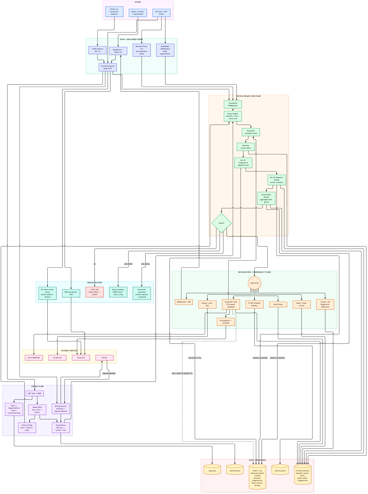

2026-10-27
After this block, you should be able to explain:
The gateway used to keep its notebook inside one Node process. Restarting that process threw the notebook away. Redis becomes a shared, expiring notebook:
Nothing is permanent. Good behavior and inactivity eventually remove the state.

Request IP
↓ normalize
HMAC-SHA256(secret, normalized IP)
↓
Read Redis fingerprint history
↓
Select previous lane
↓
Atomic Redis IP bucket
↓
Atomic Redis tenant bucket
↓
Allow or block
↓
Append outcome to Redis fingerprint list
↓
If repeated IP burst blocks: storm → strike → cooldown| Key shape | Value | Default lifetime | Purpose |
|---|---|---|---|
lp:ban:<subject-HMAC> |
cooldown marker | remaining cooldown | block the offending IP across replicas/restarts |
lp:fingerprint:<IP-HMAC> |
list of latest 30 events | 60 minutes idle | restore the lane after restart |
lp:storm:<subject-HMAC> |
sorted block timestamps | 60-second window | count a burst storm across replicas |
lp:strikes:<subject-HMAC> |
integer strike count | 24 hours | escalate repeat offenders |
lp:bucket:<key-HMAC> |
tokens + last refill | 60 minutes idle | share tenant and IP buckets |
Redis expiration automatically removes a key after its TTL. The TTL is refreshed when appropriate so active clients retain relevant state and inactive clients are eventually forgotten.
export function createIpHasher({ secret }) {
if (!secret) throw new Error("IP_HASH_SECRET is required when Redis IP state is enabled");
return (ip, tenantId = "") =>
createHmac("sha256", secret)
.update(`${tenantId}\0${normalizeIp(ip)}`)
.digest("hex");
}Line by line:
secret is a server-only value; Redis never receives
it.normalizeIp collapses IPv4-mapped IPv6 such as
::ffff:203.0.113.42.tenantId + NUL + IP creates a tenant-scoped reputation
subject.The complete token-bucket key is HMACed separately. This matters
because an anonymous tenant ID itself contains its IP
(anon:<IP>).
local state = redis.call("HMGET", KEYS[1], "tokens", "lastRefill")
local elapsed = math.max(now - lastRefill, 0)
tokens = math.min(tokens + elapsed * refillRate, capacity)
if tokens >= cost then
tokens = tokens - cost
allowed = 1
end
redis.call("HSET", KEYS[1], "tokens", tostring(tokens), "lastRefill", tostring(now))
redis.call("PEXPIRE", KEYS[1], ttlMs)Line by line:
HMGET reads the bucket state.HSET writes the new state.PEXPIRE refreshes the inactivity TTL in
milliseconds.redis.call("RPUSH", KEYS[1], ARGV[1])
redis.call("LTRIM", KEYS[1], -tonumber(ARGV[2]), -1)
redis.call("PEXPIRE", KEYS[1], tonumber(ARGV[3]))
return redis.call("LRANGE", KEYS[1], 0, -1)RPUSH appends the current
{at, route, allowed} event.LTRIM -30 -1 retains only the latest 30
observations.PEXPIRE implements automatic forgiveness after
inactivity.LRANGE returns the authoritative window for
deterministic classification.First offense:
10 burst blocks in 60 seconds → strike 1 → 5-minute cooldownIf the strike remains within its 24-hour TTL:
8 burst blocks in 60 seconds → strike 2 → 10-minute cooldownThe threshold falls by two per retained strike, down to a minimum of three. The cooldown doubles per strike up to one hour. When the strike TTL expires, the client receives a clean slate.
X-Forwarded-For only from configured
proxies;/64
versus full-address identity;anon:<raw-IP> in another Redis key.Date.now() across replicas instead of Redis
server time.X-Forwarded-For
headers.[ ] REDIS_URL is present
[ ] IP_HASH_SECRET is present and stable across replicas
[ ] redis-cli PING returns PONG
[ ] Redis keys contain no plaintext client IP
[ ] PTTL is positive for bucket/fingerprint/strike keys
[ ] New class/server instance sees the same bucket and lane
[ ] An IP cooldown does not ban a sibling IP
[ ] A repeat strike lowers threshold and increases cooldown
[ ] Unit and integration suites passUseful commands:
npm test
npm run test:integration
redis-cli --scan --pattern 'lp:*'
redis-cli PTTL '<exact-key>'IPs are reassigned and shared through NAT. Permanent state creates privacy risk and false positives. Bounded TTLs retain near-term security value while allowing automatic rehabilitation.
The IPv4 space is small enough to precompute. HMAC requires a private server key, so someone reading Redis cannot reverse the identifier with a simple lookup table.
Read, refill, compare, spend, write, and expire must be one atomic operation. Without Lua, two replicas can both read the same token count and both allow a request that should have permitted only one.
No. Each IP or tenant bucket operation is individually atomic, but the request performs multiple operations. If the IP bucket spends a token and the tenant bucket rejects, the IP token remains spent. A production upgrade needs a combined Lua reservation/commit contract or a carefully designed rollback/idempotency model.
Shared Redis makes enforcement consistent but puts a network dependency in the hot path. The team must explicitly choose fail-open, fail-closed, or a bounded local fallback and expose the chosen mode through metrics and response metadata.
LimitPlane optionally moves decision-critical IP state to Redis. It normalizes and HMACs identifiers, uses expiring lists for the latest 30 fingerprint events, atomic Lua hashes for token buckets, expiring sorted sets for storm windows, and 24-hour strike counters for repeat-offender escalation. State is shared across replicas and survives restarts, but it automatically decays. Each Redis operation is atomic; coordinating all meters as one transaction is the next design step.